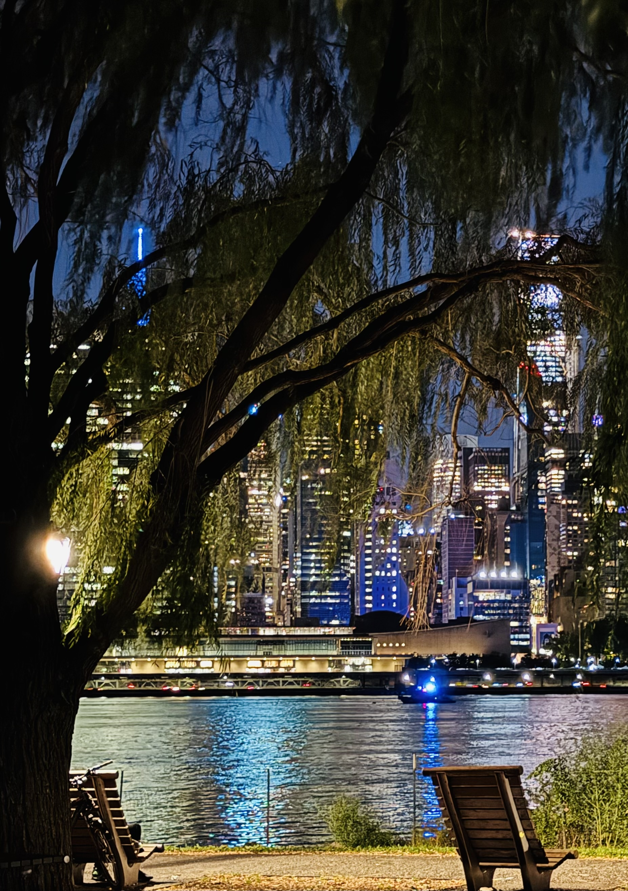
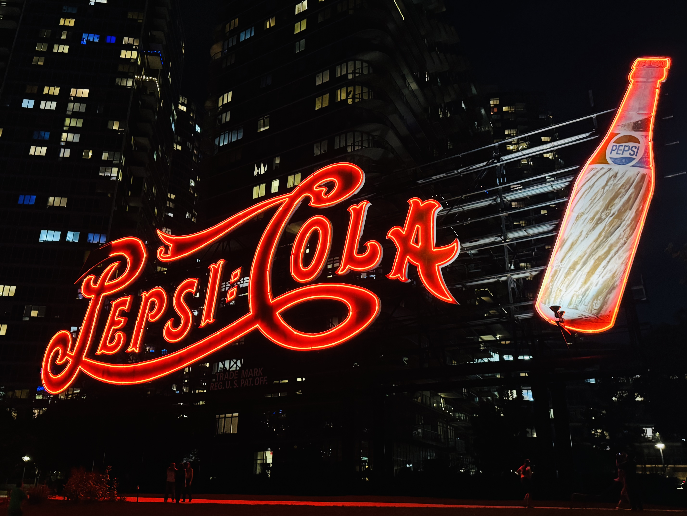

Gantry Park



Skyline across the river
From the edge of the park, Manhattan feels almost flat, like a line of light stretched across the water. The buildings stack into a band of windows, and the river quietly reflects the whole thing back.
The loudest sounds are small ones: bits of conversation, a camera shutter, water hitting the rocks, and the low engine noise of a boat cutting through the reflections.